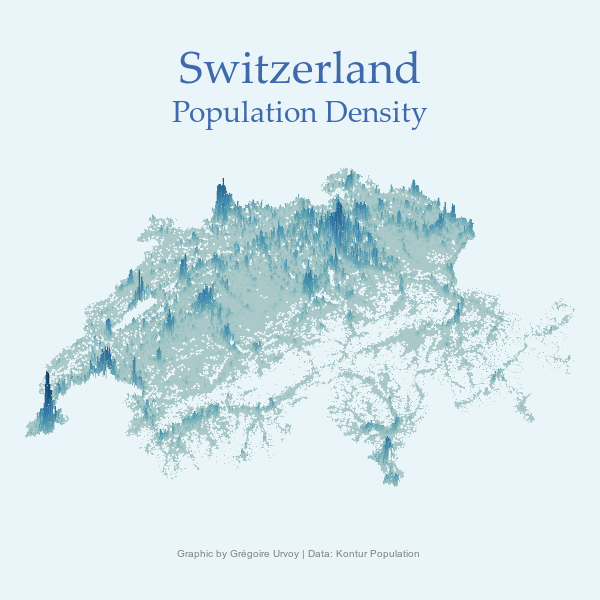

install.packages("tidyverse")
install.packages("sf")
install.packages("rcartocolor")How to plot maps with R ?
There are many ways to plot maps in R but I mainly the three following ways:
- using shapefiles, ggplot and sf packages
- using rayshader packages
- using ggmap (some functions depreciated in october 2023)
1. Shapefiles, ggplot and sf packages
Install packages:
Load packages:
library(tidyverse)
library(sf)
library(rcartocolor)Set environment:
Sys.setenv(SHAPE_RESTORE_SHX="YES")Shapefile is a special format for geospatial data. It can describes many different features such as polygons, points or lines to create the underlying elements of a map. I have here two different shapefiles, one describing lakes and another one describing swiss cantons.
Import shapefiles “1_5_ch_lac.shp” and “1_5_ch_canton.shp” using the function read_sf():
lac <- read_sf("data/1_5_ch_lac.shp")
canton <- read_sf("data/1_5_ch_canton.shp")Import csv file containing my features values “1_5_tabac.csv”:
votation <- read_csv("data/1_5_tabac.csv")Join both datasets by canton:
dataset <- canton %>%
left_join(votation, c("KURZ"="KURZ")) Create a map of Switzerland using the ggplot and geom_sf() functions to show the % of votes per canton:
graph_1 <- ggplot(dataset) +
geom_sf(aes(fill=`Oui en %`))
graph_1Add a color palette using the scale_fill_carto_c() function:
graph_2 <- graph_1 +
scale_fill_carto_c(palette="Geyser", direction=-1, limit=c(25,75))
graph_2Add lakes using geom_sf():
graph_3 <- graph_2 +
geom_sf(data=lac, fill="lightblue2")
graph_3Add a title, subtitle and caption, then a theme:
graph_4 <- graph_3 +
labs(subtitle="Oui à la protection des enfants et des jeunes contre la publicité pour le tabac",
title="Résultats de la votation populaire du 13 février 2022.",
x="",
y="",
caption="Source: Office fédéral de la statistique ") +
theme_void() +
theme(plot.title=element_text( face="bold", size =14),
plot.subtitle=element_text( face="italic"))
graph_4Add labels:
graph_5 <- ggplot(dataset, aes(fill=`Oui en %`, label=round(`Oui en %`,0))) +
scale_fill_carto_c(palette="Geyser", direction=-1, limit=c(25,75)) +
labs(subtitle="Oui à la protection des enfants et des jeunes contre la publicité pour le tabac",
title="Résultats de la votation populaire du 13 février 2022.",
x="",
y="",
caption="Source: Office fédéral de la statistique ") +
theme_void() +
theme(plot.title=element_text( face="bold", size =14),
plot.subtitle=element_text( face="italic")) +
geom_sf() +
geom_sf_label(alpha=0.8, color="grey10", size=3, position="jitter")
graph_5Save plot:
ggsave("images/1_5_map.png")2. Rayshader package
First I create the map.
Install packages:
install.packages("sf")
install.packages("tigris")
install.packages("tidyverse")
install.packages("stars")
install.packages("MetBrewer")
install.packages("RColorBrewer")
install.packages("colorspace")
install.packages("rgl")
install.packages("rayshader")
install.packages("rayrender")
install.packages("rayvertex")
install.packages("RColorBrewer")Load packages:
library(sf)
library(tigris)
library(tidyverse)
library(stars)
library(MetBrewer)
library(RColorBrewer)
library(colorspace)
library(rgl)
library(rayshader)
library(rayrender)
library(rayvertex)
library(RColorBrewer)Import kontur dataset:
data <- st_read("data/kontur_population_CH_20220630.gpkg")Reading layer `population' from data source
`C:\Users\grego\Desktop\GregoireUrvoy_maintenance\data\kontur_population_CH_20220630.gpkg'
using driver `GPKG'
Simple feature collection with 44089 features and 2 fields
Geometry type: POLYGON
Dimension: XY
Bounding box: xmin: 662371.5 ymin: 5750282 xmax: 1168910 ymax: 6075544
Projected CRS: WGS 84 / Pseudo-Mercatortemp_shapefile <- tempfile()
download.file("https://data.geo.admin.ch/ch.swisstopo.swissboundaries3d/swissboundaries3d_2023-01/swissboundaries3d_2023-01_2056_5728.shp.zip", temp_shapefile)
unzip(temp_shapefile)Define the aspect ratios:
bb <- st_bbox(data)
bottom_left <- st_point(c(bb[["xmin"]], bb[["ymin"]])) |>
st_sfc(crs=st_crs(data))
bottom_right <- st_point(c(bb[["xmax"]], bb[["ymin"]])) |>
st_sfc(crs=st_crs(data))
width <- st_distance(bottom_left, bottom_right)
top_left <- st_point(c(bb[["xmin"]], bb[["ymax"]])) |>
st_sfc(crs=st_crs(data))
height <- st_distance(bottom_left, top_left)
if (width > height) {
w_ratio <- 1
h_ratio <- height / width
} else {
h_ration <- 1
w_ratio <- width / height
}
size <- 3000
data_rast <- st_rasterize(data,
nx=floor(size * w_ratio),
ny=floor(size * h_ratio))
mat <- matrix(data_rast$population,
nrow=floor(size * w_ratio),
ncol=floor(size * h_ratio))Define colors:
c1 <- met.brewer("Hokusai2")
swatchplot(c1)texture <- grDevices::colorRampPalette(c1, bias=2)(256)
swatchplot(texture)
Create plot:
mat |>
height_shade(texture=texture) |>
plot_3d(heightmap=mat,
zscale=100 / 5,
solid=FALSE,
shadow= FALSE,
background="#e9f5f9")
render_camera(theta=0, phi=65, zoom=.9)
render_snapshot(filename="images/test_final.png")
render_highquality(filename="images/ch_map.png")Then, I had additional aesthetic elements.
Install packages:
install.packages(magick)
install.packages(glue)
install.packages(stringr)Load packages:
library(magick)
library(glue)
library(stringr)Import map:
img <- image_read("images/ch_map.png")Create colors:
colors <- met.brewer("Hokusai2")Add annotations to the plot and write image:
img %>%
image_crop(gravity="center",
geometry="6000x3500+0-150") %>%
image_annotate("Switzerland",
gravity="north",
location="+0+50",
color="#3E69AB",
size=45,
weight=70,
font="Palatino") %>%
image_annotate("Population Density",
gravity="north",
location="+0+100",
color="#3E69AB",
size=30,
weight=70,
font="Palatino") %>%
image_annotate(glue("Graphic by Grégoire Urvoy | ",
"Data: Kontur Population "),
gravity="south",
location="+0+40",
font="El Messiri",
color="#808080",
size=10) %>%
image_write("images/final_ch_map.png")
3. Ggpmap package
Update: Stamen has been depreciated since October 2023. More information here.